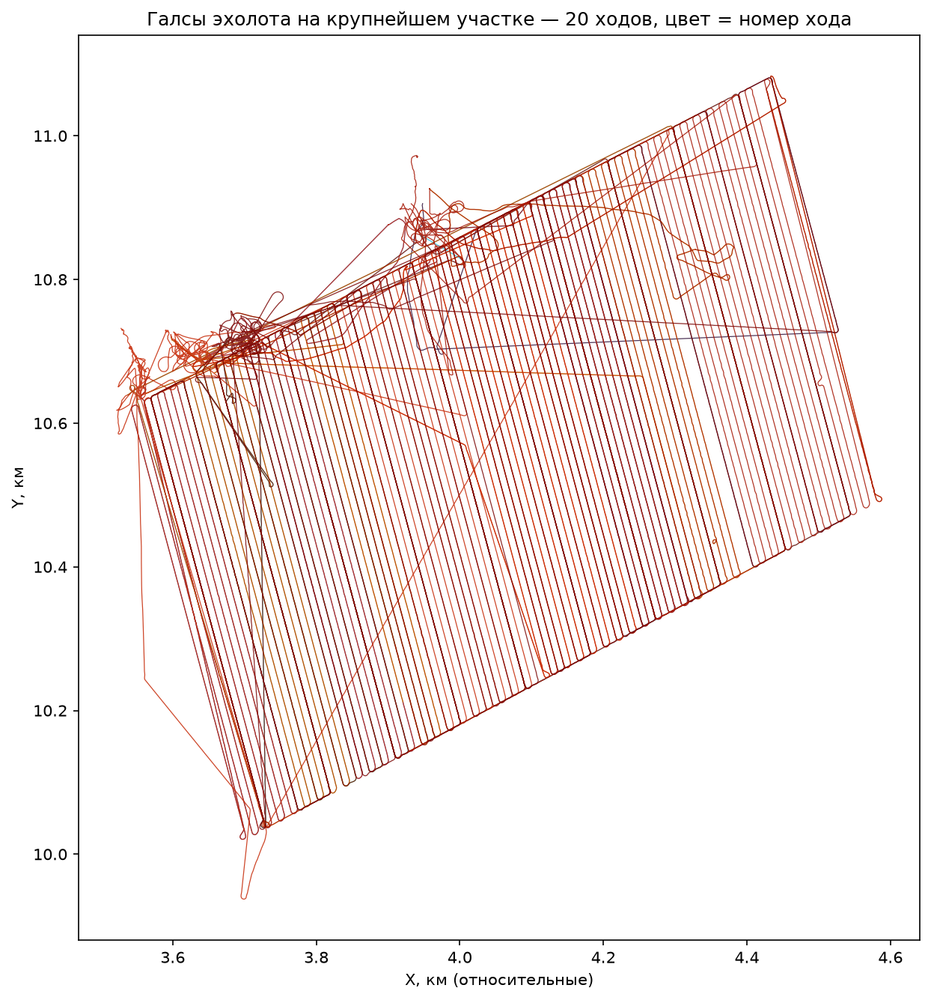
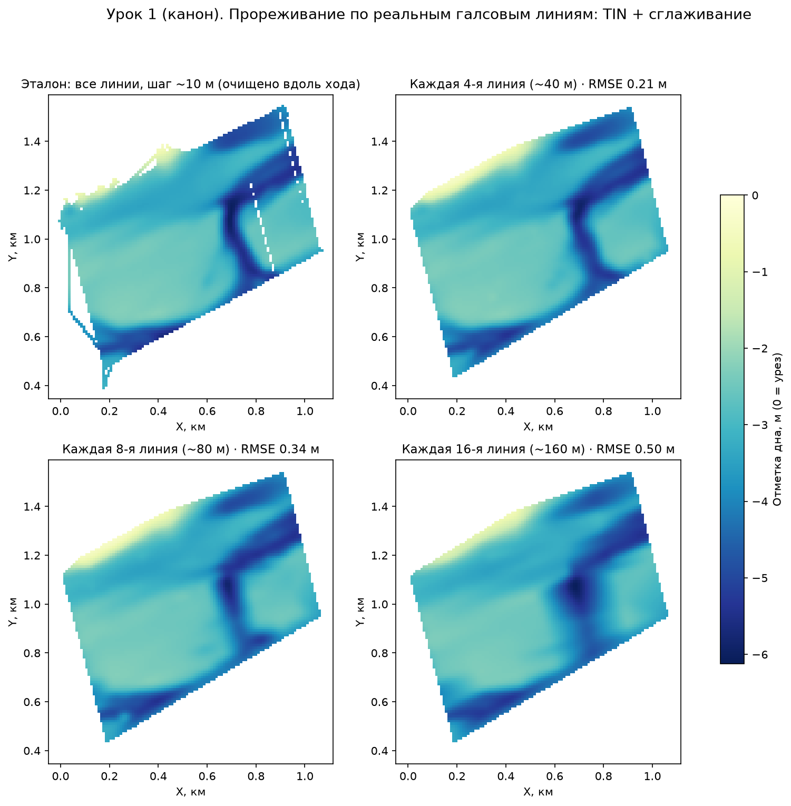
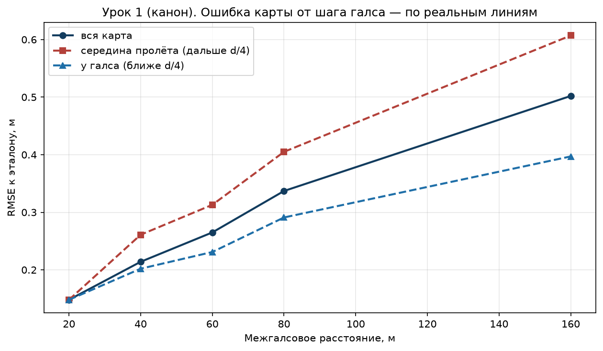
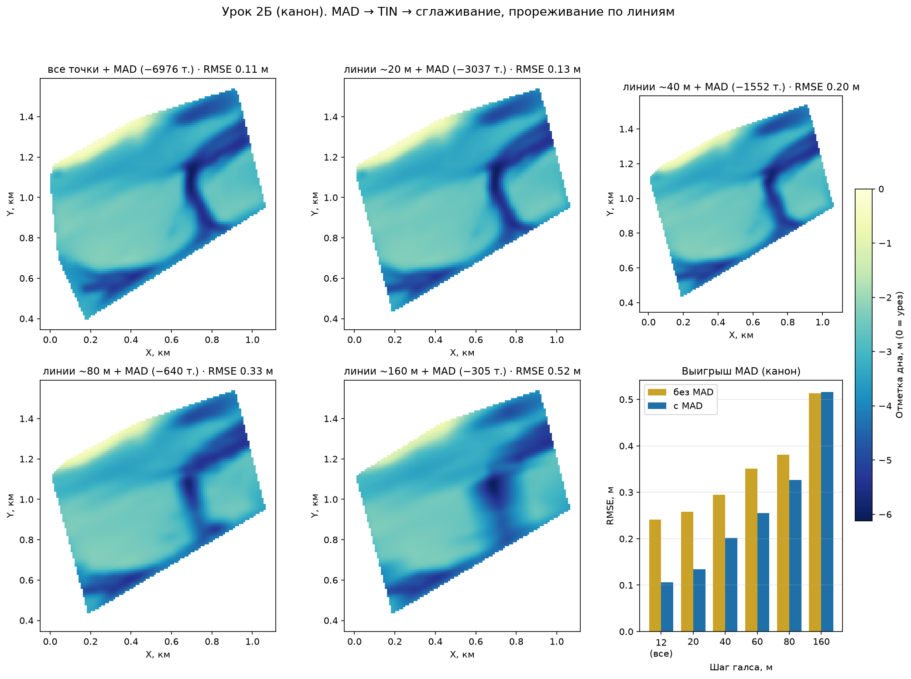
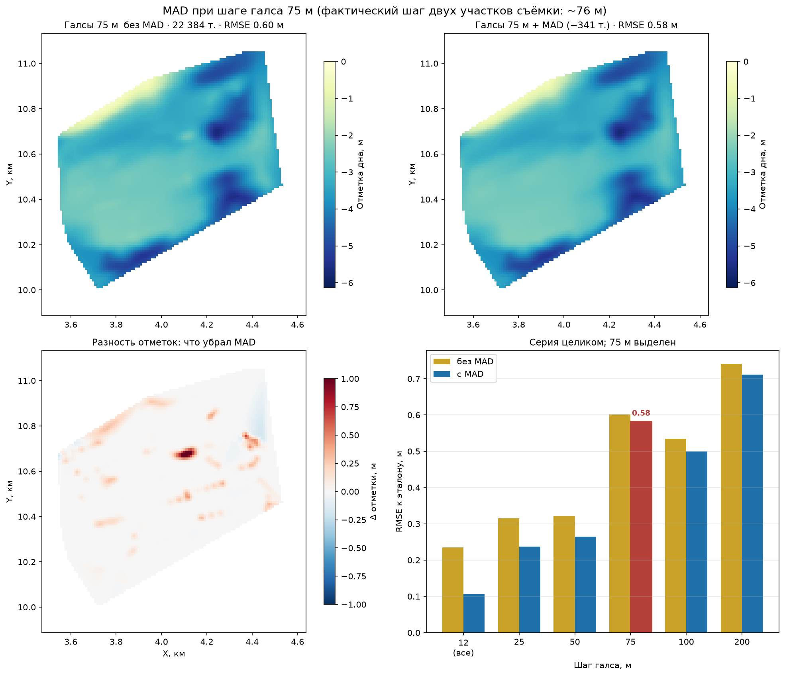

Шаг галса и цена точности: эксперимент на 519 192 реальных промерах¶
⏱ Трудозатраты: ~15 мин чтения + ~30 мин практики
Модуль П11: Батиметрия и мониторинг водных объектов, лекция 4 из 4. Профессиональный уровень. Проект UNDP-KAZ, FOLUR. Компоненты FOLUR: 2, 3.
Цели лекции и место в модуле¶
В лекции 1 вы планировали съёмку, в лекции 2 — чистили промеры и строили карту. Остался главный инженерный вопрос, который решает и бюджет выезда, и качество итоговой карты: какой шаг галса выбрать? Эта лекция отвечает на него не общими словами, а экспериментом: мы берём реальный участок съёмки исполнителя, где галсы проложены через каждые 10 м, объявляем его эталоном — и смотрим, что произойдёт с картой, если бы судно прошло вдвое, вчетверо, в шестнадцать раз реже. Заодно выясняем, где фильтрация выбросов спасает карту, а где она уже бессильна — и даже вредна.
После изучения лекции слушатель сможет:
- [Bloom: знать] различать термины ход, галс и галсовая линия и объяснять, почему разрешение эхолотной съёмки анизотропно.
- [Bloom: понимать] объяснять, как межгалсовое расстояние и шум хода по-разному формируют ошибку карты и почему один рычаг не заменяет другой.
- [Bloom: применять] воспроизводить канонический эксперимент прореживания на учебном датасете с метками галсовых линий и получать контрольные значения RMSE.
- [Bloom: анализировать] выбирать шаг галса под задачу (морфометрия чаши / русловые формы / проект дноуглубления) и оценивать цену ошибки против цены полевого времени.
- [Bloom: оценивать] распознавать методические ловушки численных экспериментов на примере реальной ошибки «полосной эмуляции», найденной при подготовке этой лекции.
Границы лекции. Внутри: терминология съёмки, эксперимент прореживания, серия «MAD на каждом шаге», выбор шага галса, разбор методической ошибки. Снаружи: прокладка галсов и журнал — в лекции 1; конвейер чистки и интерполяции — в лекции 2; объём и заиление — в лекции 3; математика интерполяции — в А4. Выполнение эксперимента своими руками — в практикуме (дополнительное задание Д1).
1. Ход, галс, линия: как читать структуру съёмки¶
Три термина, которые в полевых разговорах часто смешивают, а в данных они различимы и по-разному важны:
- Ход (
track_id) — непрерывный отрезок записи лога от включения до выключения. Один выезд может дать несколько ходов; качество разных ходов различается: в нашей съёмке RMS шума глубины по ходам — от 0,11 до 0,49 м, в четыре раза. - Галс — один прямолинейный проход судна. Классическая схема — «газонокосилка» (lawnmower): параллельные галсы с разворотами на концах.
- Галсовая линия (
leg_id) — положение галса на акватории. Несколько ходов могут проходить по одной линии (повторная съёмка), а точки разворотов не принадлежат ни одной линии (leg_id = 0).
Вдоль галса эхолот пишет точку каждые 0,3–1 м, а поперёк ближайшие данные — только на соседней линии, через десятки метров: разрешение съёмки анизотропно. Поэтому узкие формы рельефа (затопленное русло, промоина) съёмка видит хорошо только тогда, когда галсы идут поперёк них.
Учебный датасет лекции — lesson-bathymetry-tracks.csv (519 192 промера): та же съёмка, что в лекции 2, но с сохранённой структурой — колонками patch_id (участок), track_id (ход), leg_id (линия) и seq_in_track (порядок записи). Технический мусор (ход с нулевыми глубинами вне водоёма и GPS-скачки) уже исключён, а вот естественные дефекты — спайки и нули — оставлены namеренно: их чистит конвейер лекции 2.
Фактические шаги галсовых линий по участкам этой съёмки (измерено по данным):
Участок (patch_id) |
Точек | Медианная глубина | Шаг линий |
|---|---|---|---|
| 1 — главный | 469 110 | 2,9 м | 10 м (97 линий) |
| 2 — южная ветвь | 21 414 | 6,4 м | 75 м |
| 3 | 10 127 | 8,2 м | 75 м |
| 4 | 9 664 | 5,3 м | 50 м |
| 5 — глубоководный | 8 770 | 12,9 м | 50 м |

Рис. 1. Галсы главного участка (~1×1 км): классическая «газонокосилка» с шагом линий 10 м. Цвет линий — номер хода, а не качество: качество ходов оценивается отдельно, по шуму глубины. Alt: карта траекторий судна — плотные параллельные линии с разворотами на концах и служебными переходами.
flowchart LR
A[Датасет с метками линий<br/>patch_id = 1, 97 линий по 10 м] --> B[Эталон: все линии<br/>чистка вдоль хода, сетка 10 м]
A --> C[Прореживание:<br/>каждая k-я линия, k = 2...16]
C --> D[TIN-интерполяция]
D --> E[RMSE к эталону:<br/>вся карта / у галса / середина пролёта]
B --> E
E --> F[Выбор шага галса<br/>под задачу и бюджет]Рис. 2. Схема эксперимента лекции. Alt: блок-схема — из датасета с метками линий строится эталон по всем линиям и прореженные варианты по каждой k-й линии; TIN-карты сравниваются с эталоном по RMSE, результат используется для выбора шага галса.
2. Эксперимент: та же акватория, галсы в 2–16 раз реже¶
Берём главный участок (patch_id == 1, глубины > 0). Эталон — карта по всем 97 линиям: сетка 10 м, вдоль-трековая чистка (точка-выброс, если она отклонилась от скользящей медианы своего хода больше чем на 0,75 м). Затем оставляем каждую 2-ю, 4-ю, 6-ю, 8-ю, 16-ю линию — это честная эмуляция съёмки с шагом 20–160 м, потому что выбираются реальные галсы целиком, — и строим TIN-интерполяцию.

Рис. 3. Одна акватория при разном межгалсовом расстоянии (отметка дна, 0 = урез; сглаживание — только для показа). На 40 м затопленное русло ещё читается целиком, на 80 м рвётся, на 160 м остаётся размытое пятно. Alt: четыре карты глубин одного участка с прогрессирующей потерей детальности рельефа.
| Прореживание | Линий | Точек | RMSE карты | у галса | середина пролёта |
|---|---|---|---|---|---|
| каждая 2-я (~20 м) | 49 | 190 827 | 0,15 м | — | — |
| каждая 4-я (~40 м) | 25 | 91 652 | 0,21 м | 0,20 м | 0,26 м |
| каждая 6-я (~60 м) | 17 | 57 307 | 0,27 м | 0,23 м | 0,31 м |
| каждая 8-я (~80 м) | 13 | 46 522 | 0,34 м | 0,29 м | 0,41 м |
| каждая 16-я (~160 м) | 7 | 26 948 | 0,50 м | 0,40 м | 0,61 м |

Рис. 4. Ошибка карты растёт с шагом галса, в середине межгалсового пролёта — быстрее, чем у самого галса. Alt: график трёх кривых RMSE — вся карта, у галса, середина пролёта; все растут с шагом, кривая середины пролёта выше остальных.
Три вывода, которые стоит запомнить как таблицу умножения съёмщика:
- До ~40–60 м ошибка растёт медленно, дальше — быстро. Пока межгалсовый пролёт меньше характерного размера форм рельефа, интерполяция достраивает дно почти без потерь; как только русло шириной ~50 м оказывается между галсами — оно исчезает с карты.
- Карта «знает» дно только там, где прошло судно. Ошибка в середине пролёта в полтора раза выше, чем у галса, и растёт быстрее. Практическое следствие: контрольные промеры для проверки карты надо брать именно в серединах пролётов — там, где карте тяжелее всего.
- Шум задаёт нижний предел. Даже при шаге 20 м RMSE не опускается ниже ~0,15 м: дальше мешает уже не редкость галсов, а шум эхолота. Это мост к следующему разделу.
[
{"q": "Почему разрешение эхолотной съёмки называют анизотропным?", "options": ["Потому что эхолот измеряет глубину с разной точностью на мелководье и на глубине", "Потому что вдоль галса точки записываются через доли метра, а поперёк — только на соседней линии через десятки метров", "Потому что GPS даёт разную точность по широте и долготе", "Потому что глубины округляются до 0,1 м"], "answer": 1, "explain": "Вдоль хода судна плотность точек в десятки–сотни раз выше, чем поперёк: между галсами данных нет вовсе. Поэтому узкие формы рельефа надо пересекать галсами, а не идти вдоль них (§1)."},
{"q": "По результатам эксперимента: что происходит с картой при увеличении шага галса с 40 до 80 м?", "options": ["RMSE растёт с 0,21 до 0,34 м, узкое русло начинает рваться", "RMSE не меняется, но карта становится грубее визуально", "RMSE растёт вдвое, но все формы рельефа сохраняются", "Карта перестаёт строиться: TIN требует шаг не более 50 м"], "answer": 0, "explain": "Таблица §2: 0,21 м → 0,34 м. Русло шириной ~50 м при пролёте 80 м проваливается между галсами — деталь исчезает, хотя карта формально строится (рис. 3)."},
{"q": "Где ошибка интерполированной карты наибольшая и почему?", "options": ["У берега — там меньше всего точек", "На самом галсе — эхолот шумит", "В середине межгалсового пролёта — туда не доходили измерения, интерполяция достраивает дно по догадке", "В самой глубокой точке — там хуже работает GPS"], "answer": 2, "explain": "Кривая рис. 4: RMSE в середине пролёта систематически выше и растёт быстрее. Контрольные промеры для проверки карты берут именно там (§2, вывод 2)."}
]3. Фильтрация против плотности: MAD на каждом шаге галса¶
Лекция 2 научила чистить выбросы MAD-фильтром по соседям. Прогоним его через всю серию прореживания — и увидим, как меняется его польза:

Рис. 5. Полный конвейер «MAD → TIN → сглаживание» на шагах от 10 до 160 м и диаграмма выигрыша. Alt: пять карт с прогрессирующей потерей деталей и столбчатая диаграмма RMSE с фильтром и без него.
| Прореживание | Точек | Удалено MAD | RMSE без MAD | RMSE с MAD | Выигрыш |
|---|---|---|---|---|---|
| все линии (10 м) | 461 900 | 6 976 (1,5 %) | 0,24 м | 0,11 м | −56 % |
| каждая 2-я (~20 м) | 192 749 | 3 037 | 0,26 м | 0,13 м | −48 % |
| каждая 4-я (~40 м) | 92 559 | 1 552 | 0,30 м | 0,20 м | −32 % |
| каждая 6-я (~60 м) | 57 895 | 752 | 0,35 м | 0,26 м | −27 % |
| каждая 8-я (~80 м) | 46 962 | 640 | 0,38 м | 0,33 м | −14 % |
| каждая 16-я (~160 м) | 27 166 | 305 | 0,51 м | 0,52 м | ≈0: уже вредит |
Читается это так. При плотной съёмке ошибку карты делает шум — фильтр срезает её вдвое. С ростом шага главным источником ошибки становятся пробелы покрытия, и польза фильтра монотонно тает. А при ~160 м фильтр переходит грань: каждая удалённая точка теперь стоит дороже, чем шум, который она вносила, — RMSE с фильтром становится хуже, чем без него.
Плотность съёмки и чистка данных — разные рычаги качества. Первый выбирается на берегу, до выезда; второй — за столом, после. Заменить один другим нельзя: никакая фильтрация не нарисует русло, между галсами которого не прошло судно.
4. Разбор ошибки: ловушка «полосной эмуляци軶
Этот раздел — про честность численных экспериментов, и он построен на реальной ошибке, допущенной при подготовке лекции. В первой версии эксперимента съёмка с шагом d эмулировалась не выбором реальных галсов, а «полосами»: оставлялись точки в коридорах шириной 4 м с периодом d. Метод выглядел разумно — пока серия не дала абсурд: карта «с шагом 75 м» вышла хуже, чем «с шагом 100 м».

Рис. 6. Полосная эмуляция «75 м»: RMSE хуже, чем у «100 м», потому что полосы попали в биение с реальным шагом галсов и захватили меньше точек. Alt: две карты и диаграмма серии, в которой столбец 75 м выше соседнего столбца 100 м.
Причина — биение: период полос 75 м не кратен реальному шагу галсов, и полосы то попадали на линии, то проваливались между ними. Полосы «100 м» случайно поймали 31,9 тыс. точек, полосы «75 м» — лишь 22,4 тыс. Ошибка карты следует за фактическим покрытием, а не за номинальным «шагом» в названии эксперимента.
Уроки для практика: во-первых, эмулировать разреженную съёмку нужно выбором реальных галсов (для этого в датасете и есть leg_id); во-вторых, любой численный результат, ломающий монотонность там, где её ждёшь, — повод искать ошибку метода, а не сенсацию; в-третьих, «система координат не важна» — неправда: даже безобидное округление координат до 0,1 м разрушило исходный полосный метод, потому что оценка направления галса по соседним точкам стала дрейфовать.
Региональный кейс¶
Пруд-накопитель в хозяйстве Костанайской области: площадь около 0,5 км² (50 га), средняя глубина по прикидке — около 3 м, задача — карта глубин для планирования водопоя и осеннего забора воды, плюс базовая линия для будущей оценки заиления. Суммарная длина галсов ≈ площадь ÷ шаг: при шаге 40 м это 12,5 км (около двух часов на воде со скоростью 6–7 км/ч с манёврами), при шаге 80 м — 6,3 км (около часа). По таблице §2 цена этой экономии — рост RMSE с 0,21 до 0,34 м: на фоне средней глубины 3 м это уже более 10 % на каждую ячейку карты. Для задач «сколько воды и где мелеет» хозяйству достаточно шага 80 м; но если в пруду есть затопленное русло ручья, по которому планируется зимовальная яма для рыбы, — его придётся доснять поперечными галсами через 20–40 м, иначе на карте его просто не будет (вывод 1 §2). Именно так устроена и учебная съёмка: основная акватория — линии через 50–75 м, ключевой участок у слияния — через 10 м.
Закрепление и применение¶
- Посчитайте свой выезд. Для вашего (или условного) водоёма площадью S га выберите шаг галса под задачу из §2, оцените длину галсов (S ÷ шаг) и время на воде. Запишите, какой RMSE вы «покупаете» по таблице §2 и хватит ли его для вашего решения.
- Воспроизведите канон. Скачайте
lesson-bathymetry-tracks.csv, постройте эталон и вариант «каждая 8-я линия» по рецепту из раздела «Данные и воспроизводимость» ниже. Сверьте свой RMSE с контрольным значением 0,34 ± 0,01 м. - Объясните аномалию. Сформулируйте двумя предложениями, почему при шаге ~160 м MAD-фильтр ухудшил карту, а при 10 м — улучшил вдвое. Проверьте себя по §3.
[
{"q": "Почему при шаге линий ~160 м MAD-фильтр перестал улучшать карту (RMSE 0,51 → 0,52 м)?", "options": ["MAD работает только на плотных данных из-за ошибки в формуле", "При дефиците покрытия каждая удалённая точка стоит дороже, чем шум, который она вносила", "При 160 м в данных уже нет выбросов", "Фильтр удалил точки берега"], "answer": 1, "explain": "Главный источник ошибки при редких галсах — пробелы покрытия, а не шум. Удаляя точки, фильтр расширяет пробелы: цена удаления превышает пользу (§3)."},
{"q": "В чём была ошибка «полосной эмуляции» съёмки с шагом 75 м?", "options": ["Полосы шириной 4 м слишком узкие для эхолота", "Период полос попал в биение с реальным шагом галсов — полосы захватили меньше точек, чем полосы 100 м", "TIN не работает с полосами", "Округление глубин до 0,1 м исказило результат"], "answer": 1, "explain": "Полосы 75 м то попадали на линии галсов, то проваливались между ними: фактическое покрытие оказалось хуже, чем у полос 100 м. Честная эмуляция — выбор реальных галсов по leg_id (§4)."},
{"q": "Что означает leg_id = 0 в учебном датасете?", "options": ["Точки эталонной линии", "Точки с нулевой глубиной", "Точки разворотов и переходов между галсовыми линиями", "Точки, удалённые MAD-фильтром"], "answer": 2, "explain": "Галсовая линия — это прямолинейный проход; развороты на концах и служебные переходы не принадлежат ни одной линии и помечены нулём (§1). В эксперименты прореживания их не включают."},
{"q": "Хозяйству нужна карта пруда 50 га для оценки объёма воды, узких форм рельефа нет. Какой шаг галса разумен?", "options": ["10 м — точность лишней не бывает", "80 м: RMSE ~0,34 м приемлем для морфометрии, а время на воде — около часа", "160 м: фильтрация всё исправит", "Шаг не важен, важно число точек"], "answer": 1, "explain": "Для морфометрии чаши без узких форм достаточно ~80 м (§2, региональный кейс). Вариант 160 м опасен: RMSE 0,5 м и фильтрация уже не помогает (§3); вариант 10 м — четырёхкратная переплата полевым временем."}
]Данные и воспроизводимость¶
- Датасет:
lesson-bathymetry-tracks.csv— 519 192 промера, колонкиpoint_id, patch_id, track_id, leg_id, seq_in_track, x_m, y_m, depth_m. Координаты — та же локальная система уровня A, что и в датасете лекции 2 (без геопривязки; название и расположение водоёма не раскрываются). Глубина хранится положительной (depth_m); для ГИС-продуктов используйте отметку днаbottom_elevation_m = −depth_m— на всех картах лекции вертикальная шкала отрицательная (0 = урез). - Синтетический берег:
lesson-shore-synthetic.csv— условный контур для упражнений с граничным условием «глубина на урезе равна нулю»; это граница покрытия съёмки, а не реальная береговая линия. - Рецепт канона: эталон —
patch_id == 1,depth_m > 0, сетка 10 м, вдоль-трековая чистка (|глубина − скользящая медиана 11 точек поseq_in_track| ≤ 0,75 м); прореживание — каждая k-я галсовая линия поleg_id(k = 2/4/6/8/16), точкиleg_id = 0не используются; интерполяция — TIN (scipy.interpolate.griddata, linear); MAD-фильтр — 30 соседей, порог 3·1,4826·MAD, но не менее 0,3 м; сглаживание (гаусс, σ = 1,5 ячейки) — только для визуализации, RMSE всегда считается по несглаженной поверхности. - Контрольные значения RMSE — таблицы §2 и §3 (воспроизводятся с точностью ±0,01 м).
Политика доступа и правовой режим данных: Датасеты платформы.